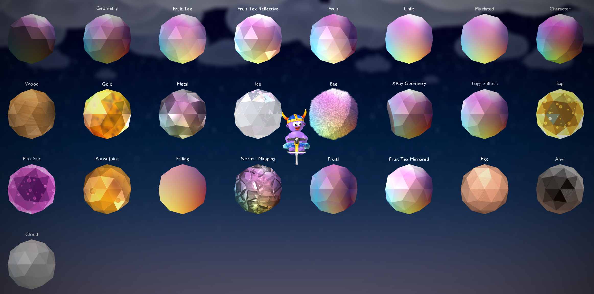

Entities¶
Entities include:
Models (any regular Blender mesh)
Sprites (can be made from the PogoBlend Add menu)
Blocks (can be made from the PogoBlend Add menu)
All entities are just meshes. Models are regular meshes as you know them. Sprites are just a flat plane with a texture on it, and blocks are also flat planes with some pre defined settings.
See also
Modeling page for more information on how to make the meshes that entities use.
Entities have materials, actions, and flags.
Materials¶
The material on an entity determines how it will look in-game. It currently has not effect on how it is displayed inside Blender. Some materials allows changing the brightness (technically it’s “ambient”, how much sunlight the material should reflect), and some other value (greyscale, transparency).
Below is an in-game image of the available materials, aswell as a list of their names and descriptions which is also available in the add-on by hovering your mouse over each material.

In-game image of the available materials with a gradient texture applied. Note: the ‘Sap’, ‘Pink Sap’ and ‘Boost Juice’ materials have a bubbles texture instead. Also, the ‘Normal Mapping’ material is using a second texture, a normal map, and it will look different depedning on the normal map you are using. ‘Moss’ has a second UV Map that determines the location of the moss.¶
Name |
Description |
|---|---|
No Material |
|
Geometry |
The default material for regular geometry |
Fruit Tex |
Like ‘Geometry’ but… fruit? Works well with textured entities |
Fruit Tex Reflective |
Like ‘Fruit Tex’ but more reflective |
Fruit |
“Fruity” material |
Unlit |
Unlit material |
Pixelated |
Shows the texture with no modificaitons. Specifically texture filtering, so this material is good for showing pixel art |
Character |
Bright and high contrast material |
Wood |
Wood material |
Gold |
Gold material |
Metal |
Glossy metal material |
Ice |
Looks like ice |
Bee |
Looks like the hair on the bees |
Moss |
Uses a second UV Map to add moss to the entity. Any UV-cordinate on the second UV Map, that has an X-value greater than 1 becomes mossy |
Gravity |
Uses two UV Maps to display a gravity material as seen in Custom Map X. The first UV Map chooses the direction flow and speed of the particles. It looks best when all the UV Points are in the same position. The particles will be pulled towards the top left corner of the UV Map, but the Y-axis is flipped. The second UV Map determines how the galaxy background and colors appear |
Gravity Pull |
Pulls the texture (needs a texture!) towards the center of the UV Map with a purple hue. Like Plums in Map 2 |
Water |
Looks like reflective water. It mirrors where Z=0. To have the mirror-axis occur at the top of the entity, use the “Water Visual” action |
Fog |
Turns the texture transparent and greyscale, with a stack of the texture moving across it slowly |
XRay Geometry |
Hiddes the entity when the players comes too close. Otherwise same as ‘Geometry’ material |
Toggle Block |
Should be used with the ‘Toggle Block’ action. Dithers the entity |
Sap |
Used for regular sap. Scrolls the texture. Use the ‘Slime Bubbles’ texture to get the regular sap look |
Pink Sap |
Used for the pink sap. Scrolls the texture. Use the ‘Slime Bubbles’ texture to get the regular pink sap look |
Boost Juice |
Used for boost juice. Looks like gold. Scrolls the texture. Use the ‘Slime Bubbles’ texture to get the regular boost juice look |
Falling |
Scrolls multiple copies of the texture downwards. Can be used to make snow fall or other particles |
Normal Mapping |
Uses the second texture on the entity as a normal map. |
Fruit1 |
Main material used in Map 1 |
Fruit Tex Mirrored |
Same as ‘Fruit Tex’ but mirrors tiling textures |
Egg |
Looks like the egg |
Anvil |
Used for the anvil. Has a cast iron look |
Cloud |
Used for the clouds. White material, with grey parts |
Custom Material 1 |
A Custom Material |
Custom Material 2 |
A Custom Material |
Custom Material 3 |
A Custom Material |
Custom Material 4 |
A Custom Material |
Custom Material 5 |
A Custom Material |
Custom Materials¶
You can make Custom Materials using High-level Shader Language (HLSL) and .fx files. There is 5 different slots for Custom Materials. When an entity has a Custom Material applied, there will be a button that will open a text editor where you can edit the shader. The first time you do this you can choose from a set of premade templates that will be used, that you can then delete or build out from.
If you would like to edit the shader with an external editor simply save the text block in Blender to an external file, or create a file called ‘customMaterialX.fx’ (X is the custom material slot) in the same folder as your Blender file.
When you edit/add a Custom Material, you might need to restart Pogostuck so it can setup auto reloading of that material. When that is setup, you just need to export the map and the shader will be updated instantly, you won’t even have to reload the map! Once you are done mapping and editing Custom Materials, you might also want to restart Pogostuck again, because otherwise other Custom Maps using Custom Materials will use the ones you’ve made instead of theirs.
Making Custom Materials¶
As mentioned before Custom Materials are written in HLSL, which is a common shader langauge. If you know nothing about programming or shaders, it might be helpful to learn a bit about them first before working on your own Custom Materials. HLSL and shaders are a huge topic, so I can’t write all the details you need here, luckily there is many resources about them online that you can lookup. If you are following a tutorial you might even want to try to complete the exercises inside of Pogostuck by setting up a flat plane with a Custom Material (‘Empty’ template), and then editing it!
To get a better idea of what a Custom Material includes, you should look at the ‘Example’ template, that is available in the Add-on. Read all the comments and try to understand what each part of the file is doing and contributing. After that you can also try looking at the ‘Geometry’ template for further reference, as this is a material written by Superku and is used in the base game!
Tip
In order to use the alpha value in your pixel shader, you should set the ‘alphaBlendEnable’ value in the technique to true.
Tip
If you make a syntax error in the shader, a default shader will be used instead. This shader shows the model geometry with very little light. If you see this you now know that you made a syntax mistake!
It is possible to pass variables to the Custom Material using the ‘Skill set’ action. To make it easier to know which variables you are setting, it is possible to name them in the Custom Material file with a comment, and they will then be named so in the Add-on aswell! They follow the structure // {skillNr}; {name}; {description}. You can also give a name to your Custom Material to better reference it. Look at the ‘Example’ and ‘AnimUV’ templates, for further reference/examples on this.
Note
It is also possible to give your Custom Material a description and author. However, these and the skill description are not shown in the Add-on, because of technical limitation with Blender.
Actions¶
Actions change the behavior of the entity. Some actions might have additional options that allow you to change the specifics of how the action should behave. An option is either a flag, an on or off option, or a ‘skill’ which is just a decimal number.
An entity can have a maximum of two actions. If you are using two actions please note that some of the options might overlap and that using two actions might give inconsistent behavior.
Below is a list of the avaiable actions. The descriptions for the actions will be available in the add-on, but unfortunately the descriptions for the options are currently not.
Warning
Some flags in the action options might overlap with the ‘Bonk’ and ‘Ice’ flags.
Name |
Description |
|---|---|
Mushroom |
Makes the entity bounce like a mushroom Skills
|
Parallax |
Moves the entity based on the players position. Normally used to move background entities Flags
Skills
|
POI |
Makes the player look at this entity Flags
|
Thorn |
Knocks the player over on contact, or sends them to the nearest point on the attached path |
Sap |
Knocks the player over on contact. Yellow particles |
Pink Sap |
Knocks the player over on contact. Pink particles |
Coconut |
Knocks the player over on contact. White particles |
Boost Juice |
Gives the player a boost when jumping off this entity |
Break |
Breaks the entity when the player jumps off it. Plays an animation of a cube breaking at the origin of the entity. Does not work with Auto Collision |
Collectable |
Makes the entity disapear, with explosion particles, when the player collides with it. Does not work with Auto Collision |
Boostless |
|
Wheel |
Spins the entity around it’s origin Flags
Skills
|
Move Sine |
Move the entity along its axes following a Sine Wave Flags
Skills
|
Move Loop |
Moves the entity a certain distance and then resets it’s position. Like Map 2 bees Skills
|
Toggle Block |
Toggle the entities state/collision everytime the player jumps/boosts. Can be used with the ‘Toggle Block’ material Flags
Skills
|
Toggle Sine |
Toggle the entites state/collision based on time passed Flags
Skills
|
Run State Toggle |
Show or hide the entity depending on the state of the current run Flags
Skills
|
Water Visual |
Adds a flowing water visual to the entity. Changing the UVs will change how the water flows (speed, angle, width, wobbliness) Flags
|
Skill set |
Used to pass skills as variables to shaders (materials). Not documented at all, so don’t expect this to do anything with most normal materials. Can integrate with Custom Materials Skills
|
Mushroom Bones |
Makes the player bounce on the object. Used for mushrooms. Only works if the entity has bones Flags
Skills
|
Flags¶
Flags are on or off values, and change certain things about the entity.
Invisible makes the entity invisible.
Shadow gives a glow shadow around the entity. It does this by just adding a blurry version of it in the background, so this doesn’t work if the background is blocked or the background flag is on.
Background places the entity in the background and blurs it.
Collision makes the entity collideable. See Collisions.
The following flags only has an effect if the entity is collideable:
Auto Collision generates a collision that matches the entities sideview. See Collisions.
Kill kills the player on contact with the entity.
Ice makes the player glide on the entity like ice.
Bonk makes the player bonk on contact with the entity, even if it’s the pogostick that makes contact.
Collisions¶
You can enable collision on any entity. When collisions is enabled the player will collide with the entity. The collision happens where the Y-position is equal to 0, so make sure that you position collideable entities on the XZ-plane.
In case you just want the player to collide with an entity as it appears on it’s sideview you can enable Auto Collision which will auto-generate a collider for the entity and place it correctly. If you want to preview or modify this collision you can generate the collision yourself by selecting the entity that you want to create a collider for and under the ‘Object’ panel you can select PogoBlend -> Create a Pogostuck Collider.
Note
Automatic colliders are not guarenteed correct so if your collisions are acting funky, try generating the collider manually and inspect it to look for any problems.
Warning
Sometimes when colliding with a rotated entity, the player might fall straight through it. If this is the case, just rotate the mesh and not the entity, or use Auto Collision as that won’t have any rotation on it.
Overrides¶
The auto-generated assets from Pogostuck will have some overrides applied to them. Overrides just tells the add-on to build the entity in a certain way. For these assets it is the filename that is overriden, and that means that the mesh will not be exported to a model and the entity will instead use the file with the name given by the override. The same goes for just about any field on an entity, like materials. For normal use cases you won’t have to set these overrides manually, but it’s good to know what they are. You can enable viewing all overrides in the preferences. If a field is overridden it will be shown no matter the option in your preferences.